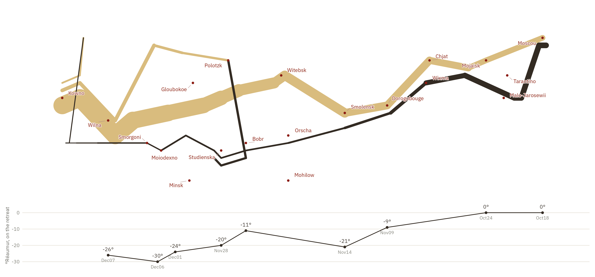

Show the R code
# Minard's two inks: tan out, black back.
ink <- c(A = "#D9BC7E", R = "#332B23")
xlim <- c(23.6, 38.2)
march <- ggplot(troops, aes(long, lat)) +
# group must combine direction AND group: the numbering restarts for the
# retreat, so `group = group` silently joins the advance to the retreat.
geom_path(aes(linewidth = survivors, colour = direction,
group = interaction(direction, group)),
lineend = "round", linejoin = "round") +
geom_point(data = cities, size = 1, colour = "#8C1C13") +
ggrepel::geom_text_repel(data = cities, aes(label = city),
size = 2.7, colour = "#8C1C13", family = dsvar_font(),
seed = 7, box.padding = 0.5, point.padding = 0.25,
max.overlaps = Inf, force = 6, max.iter = 20000,
min.segment.length = 0.25, segment.size = 0.2,
segment.colour = "#B08A84",
bg.color = "#faf8f4", bg.r = 0.12) +
# Width is proportional to survivors and the scale starts at zero, which is
# what makes the collapse readable. The 0.45 floor is a compromise: see below.
scale_linewidth(range = c(0.45, 12), limits = c(0, max(troops$survivors))) +
scale_colour_manual(values = ink) +
coord_cartesian(xlim = xlim, ylim = c(53.8, 56.15)) +
theme_void(base_family = dsvar_font()) +
theme(legend.position = "none")
# Minard's thermometer is in degrees REAUMUR, not Celsius. See the note below.
temp_panel <- ggplot(temps, aes(long, temp)) +
geom_line(colour = ink[["R"]], linewidth = 0.5) +
geom_point(colour = ink[["R"]], size = 1.3) +
geom_text(aes(label = paste0(temp, "°")), vjust = -1.1, size = 2.7,
colour = ink[["R"]], family = dsvar_font()) +
geom_text(aes(label = ifelse(is.na(date), "", date)), vjust = 2.1, size = 2.4,
colour = "#7a7a70", family = dsvar_font()) +
scale_y_continuous(breaks = c(0, -10, -20, -30)) +
coord_cartesian(xlim = xlim, ylim = c(-34, 6)) +
labs(y = "°Réaumur, on the retreat", x = NULL) +
theme_dsvar(base_size = 9, grid = "y") +
theme(axis.text.x = element_blank(), axis.line.x = element_blank(),
axis.title.y = element_text(size = 7.5))
march / temp_panel + plot_layout(heights = c(2.7, 1))